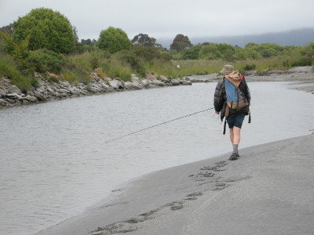
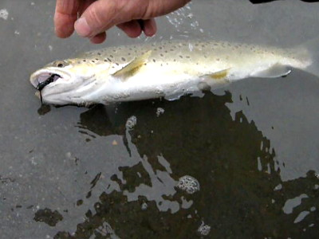
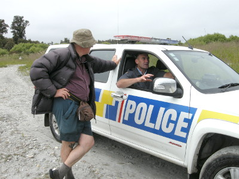
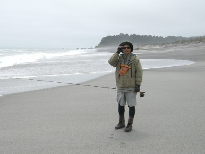
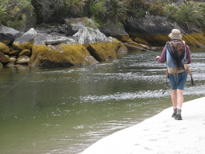

釣行日誌 ＮＺ編 「翡翠、黄金、そして銀塊」
お巡りさんと立ち話
2010/12/01(WED)-2
その後もチビっ子ブラウンたちが相手をしてくれたが、なかなか大物は出ずに、河口まで来てしまった。今度は右岸側を歩いて引き返すことになった。しばらく歩いてくると、支川が合流しているポイントに出た。平常時はあまり水量の無い支川らしく、河道の水はほとんど止水であった。その細長い水たまりとも言える水域を、ブリントさんが油断せずに探ってゆく。それほど水深は無いが、なんとなく怪しい気配が漂っている。

と、彼のロッドティップがカクンッと曲がり、続いての合わせで竿が気持ち良く曲がった。それほど大きくは無いようだが、さっきまでのおチビちゃん達よりは良い型らしい。
「この魚はキープできますかねぇ？」
「う～ん、出来ないことは無いけど、ちょっと小さいぞ....」
「もし出来れば、オークランドのハーマン夫人へのお土産にしたいんですが」
などと会話しているうちに鱒は手元まで寄せられ、水辺で黒のウーリーバガーのフックが外された。35cmほどだろうか。銀白色の魚体が美しい。

「キープしたければ、してもいいぞ」
「ううむ。どうしようかなぁ....あ、お願いします！」
と言った途端に鱒は飛沫を上げてブリントさんの手を飛び出し、深みへと消えていった。
「ハハハ！ 早く言えよな！」
二人でしばらく笑い合った。運の良いブラウントラウトは、今頃どうしているだろうか？
その後、車に戻る砂利道をしばらく歩いていると、珍しくパトロールのお巡りさんが大型の四駆パトカーでやって来た。ブリントさんはその警官と顔見知りらしく、二人は立ち話を始めた。会話の内容はわからなかったが、これから夏の観光シーズンとなるので、お巡りさんもきっと忙しくなるだろうなと思った。

さて、目指すは次の川である。６号線から脇の砂利道に車を入れ、空き地に停めてから二人で小径を海岸の方へ歩き出した。10分ほど歩くと、広い砂浜の続く海岸へ出た。タスマン海である。遙か北の方に、海岸まで連なっている砦のような山が見えた。ブリントさんの言うには、目指す川の河口はあの山の麓にあるという。砂浜はフラットで流木も無く、歩きやすかったが、ざっと見て30分はかかるなと思われた。
「タケシ！ 車へ戻る小径の入り口をしっかり覚えておけよ。」
そう彼が声をかけてくれた。辺りには同じようなブッシュが広がっているだけだったが、ちょっとだけ目立つ大きな流木の切り株を目標物として覚えておいた。
二人で黙々と河口へ向かって歩みを進めていくと、小休止の時にブリントさんが記念写真を撮ってくれた。

背中がじっとりと汗ばんできた頃、ようやく河口に着いた。砦のような小山の麓をえぐるようにして川が海へと流れ込んでいる。水の色は怪しく、いかにも大物の降海型ブラウンが潜んで居そうな気配が濃厚に漂っていた。ブリントさんが勝手知ったる様子でポイントを攻め始めた。

河口近くの流れは細く激しかったが、少し遡行してゆくと、川幅が大きく広がり、茫漠としたとらえどころの無いほとんど止水域になった。それでもブリントさんは、ちょっとした窪みに魚影を見つけ、砂浜を大きく回り込んでポジションをとり、ターゲットにキャストした。しかし、折からの強風でフライが鱒の真上に落ちてしまい、怯えたブラウンはどこかへ姿を消してしまった。さらに具合の悪いことに、上流からカヌーイストたちが３艘ほどのグループでやって来て、パシャパシャとパドルの音を立ててあたり一帯をクルージングし始めた。
『こりゃぁ、あの連中が居たんじゃ釣りにならないなぁ....』
と思ったが、川はみんなのものであるから文句を言うわけにもいかない。僕の忸怩たる思いをよそに、ブリントさんは水際を丁寧に探りつつ、着実に上流へと遡行してゆく。
釣行日誌ＮＺ編 目次へ
サイトマップ
ホームへ
お問い合わせ